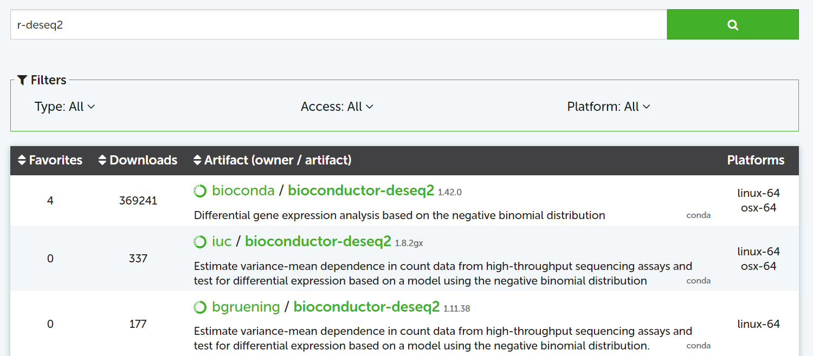
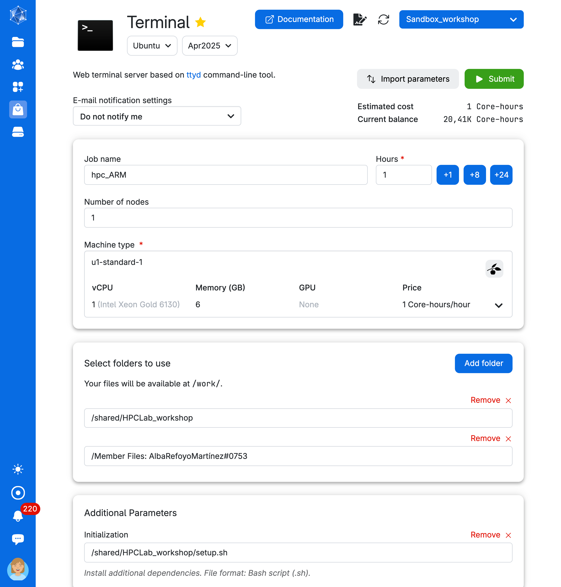

Package managers
Basic commands HPC Launch https://hds-sandbox.github.io/HPC-lab/
2025-04-07
Sandbox project workspace
Click the invite link below to accept the invitation to the Sandbox workspace:
Software management on UCloud
Every app comes with its pre-defined installed software on UCloud
The
Terminalapp has no preinstalled (bio)softwareYou can install and manage your software and its dependencies using virtual environments
Virtual environments
Each project needs specific software versions dependent on each other for reproducibility - without interfering with other projects.
Definition
A virtual environment keeps project-specific software and its dependencies separated.
A package manager is a software that can retrieve, download, install, and upgrade packages easily and reliably.
Conda
Conda is both a virtual environment and a package manager.
- easy to use and understand
- can handle quite big environments
- environments are easily shareable
- a large archive (Anaconda) of packages
- active community of people archiving their packages on Anaconda
A package manager puts together the dependency trees of requested packages to find all compatible dependency versions.

Figure: A package’s dependency tree with required versions on the edges
To install a specific package in your environment, search for it on anaconda.org:

Channels
Packages are archived in channels. conda-forge and bioconda include most of the packages for bioinformatics and data science.
conda-forge packages are often the most up-to-date.
Part 1. Exploring an existing environment
Let’s open the Terminal app. Since Conda is not pre-installed in the Terminal app on UCloud, we will need to:
- Mount a drive with a pre-installed Miniconda setup.
- Run a bash script to add conda to the search path.

We will run the following commands to get familiar with Conda environments.
- What is the conda version?
- Check the name of all the different environments available to you.
- Let’s explore one of the environments. To do this, let’s activate
hpclab-envenvironment
- How many packages are available in this environment?
Imagine you need to share your environment with a collaborator so they can replicate your analysis. How do we do this?
- Export the environment specifications and save them to your personal drive (e.g.,
.yml)
- Deactivate the environment.
Part 2: Building your conda environment
Let’s create a new directory in your personal drive:
Now, add a new environment using the argument --prefix PATH (e.g., /work/<YourNameSurname#xxxx>/envs/<name-env>). We need to do this as miniconda is installed in a directory that you don’t have write rights to.
Locally, you would typically run the command: conda create --name <myenv>
Warning
Always specify the location using --prefix PATH regardless of the UCloud app you use, especially if the app has conda pre-installed (e.g. Jupyterlab). The path must be on your personal drive or a shared drive with colleagues that you have access to. Otherwise, the environment won’t be saved, as you’re working within a temporary container instance.
- Create the environment
- Confirm the environment location
Proceed ([y]/n)? y- Double-check that the new environment exists
- Activate the env
- By default, we won’t have conda-forge or bioconda added to the environment. Let’s fix this.
- Add the latest Python version to the environment
- Install samtools, a tool for manipulating DNA sequencing data
- Uninstall samtools
- Deactivate your environment